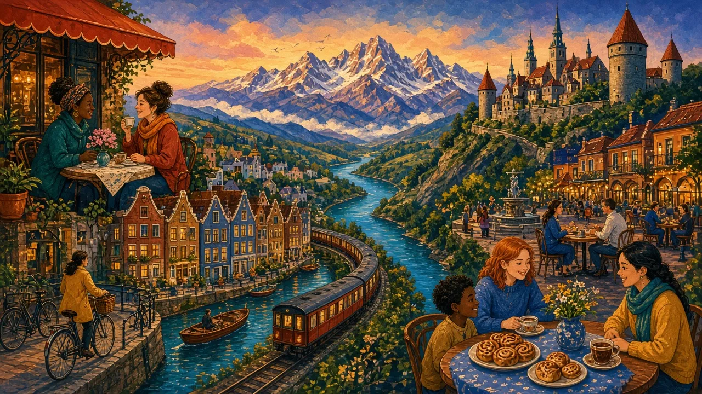

9 lessons on European cultures and differences — each one opens with a stereotype and finds out what is really true.
Punctual Germans, late Spaniards, blunt Dutch, polite British, cold Nordics: Europe is full of national stereotypes. Start with the Background lesson, then work through the topics. Each lesson asks three questions — what does the stereotype say, what is the reality, and why does the idea exist? — and finishes with practical tips for working, travelling and making friends across cultures.
Read this first: what Europe is, and why it has so many ways of doing things.
Culture, cultural differences and the stories we tell about each other.
The same topics in simpler English: short readings, six key words and easy grammar.
No lesson matches that search.
Eight words unlocked first, guessed from context.
The stereotype, then the reality, in three parts with checks.
One structure that fits the topic, with practice.
Why the stereotype exists — and tips for today.
Three timed tasks that put it all to work.
Photos and paintings from Wikimedia Commons (licence shown). Colour illustrations were created for this series.


_-_Napoli_MAN_111475_-_02.jpg){kind=link}